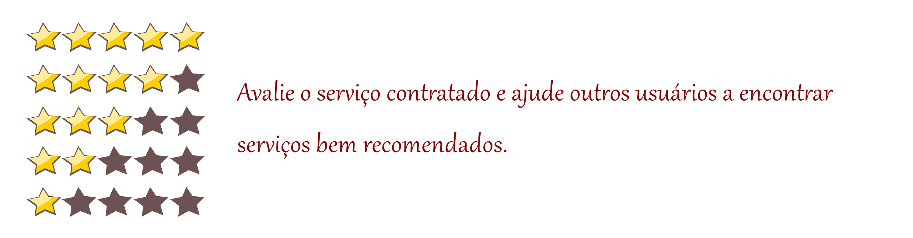
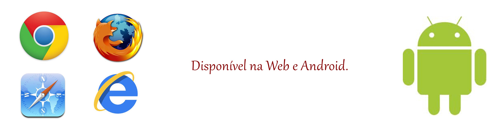

Sistema de Busca de Serviços
Home
Projeto
Processo
Documentos
Não se estresse, busque
SOS
!
–Encontre serviços bem avaliados, pertinho de você–


Este projeto é fruto da disciplina Engenharia de Software (in0953/2014).